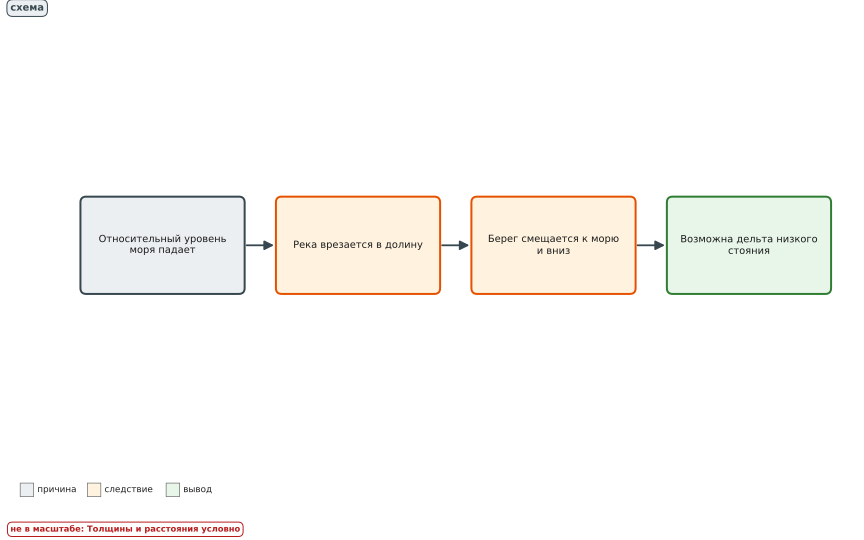
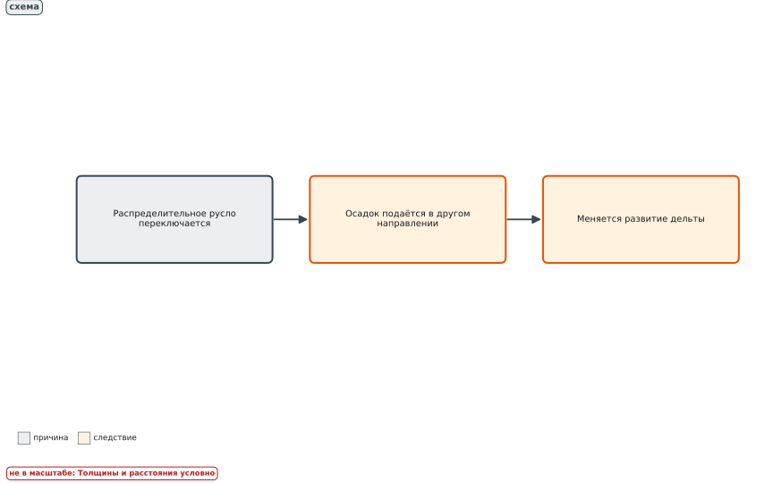

Дельта может менять направление и без перемены уровня моря.
Важно отличать смену активного русла от врезания долины при падении уровня моря.
Пороговая идея. Дельта меняет направление роста и без изменения уровня моря. модель
Интерактив: как это происходит


1 / 6
Рассматриваем падение относительного уровня моря.
Не в масштабе: Толщины и расстояния (условно). Допущения: Геометрия и шкалы, если есть, условные; схема не оцифрована из книги..
Как это работает
Механизм
Помимо колебаний уровня моря на дельты действует переключение распределительных русел. По приведённой оценке переключение русел может сильнее влиять на эволюцию дельты, чем изменение уровня моря. стр. 410
«In addition to sea-level fluctuations, deltas are subject to “delta distributary switching processes,” such as modeled in Fig. 9.12»
«According to Overeem et al. (2005), channel switching may be an even more important control on the evolution of deltaic systems than is sea-level change»
Как это видно
Дельты могут образовываться при относительном падении уровня моря; такие тела называют дельтами низкого стояния или края шельфа. В начале падения уровня моря река врезается в долину, а береговая линия смещается к морю и понижается. Дельты низкого стояния, как правило, меньше и встречаются реже, чем дельты высокого стояния. стр. 410
«Deltas can also form during a relative fall in sea level; these are often referred to as “lowstand” or “shelf-margin” deltas or systems tracts (Figs. 5.18 and 5.19)»
«These deposits form in response to early fall in sea level, which causes valley incision, and a seaward retreat and lowering of the shoreline»
«Although important, these lowstand deltas are generally not as large, nor as prevalent as highstand deltas»
схема
Уровень моря падает → Река врезается → Берег смещается.
Класс B · схема · нарисовано кодом · стр. 410
Цифры и условия
Дельты могут образовываться при относительном падении уровня моря; такие тела называют дельтами низкого стояния или края шельфа. стр. 410
Дельты низкого стояния, как правило, меньше и встречаются реже, чем дельты высокого стояния. стр. 410
Частая ошибка модель
✗Ошибка: Любое изменение положения дельты означает изменение уровня моря.
✓На самом деле: Активное русло также может сменить направление подачи осадка. стр. 410
Что это значит для данных по книге
При восстановлении истории роста дельты учитывают и изменение положения берега, и переключение русел.
Вход
Помимо колебаний уровня моря на дельты действует переключение распределительных русел.
Выход
Дельты низкого стояния, как правило, меньше и встречаются реже, чем дельты высокого стояния.
Где ломается
Сравнение влияния русел и уровня моря условное; различие размеров низких и высоких дельт сформулировано как тенденция.
Где здесь ручной труд специалиста
Входные данные
Помимо колебаний уровня моря на дельты действует переключение распределительных русел.
Ручные шаги
При восстановлении истории роста дельты учитывают и изменение положения берега, и переключение русел.
Точки суждения
Сравнение влияния русел и уровня моря условное; различие размеров низких и высоких дельт сформулировано как тенденция.
Время
Глава не оценивает трудозатраты; время зависит от объёма проверки и качества исходных наблюдений.
Типичные ошибки
Любое изменение положения дельты означает изменение уровня моря.
Аналогия модель
Форма маршрутов зависит и от внешней границы сети, и от переключения активных ветвей.
Где аналогия перестаёт работать: Русло меняет положение за счёт переноса и накопления осадка, а не по команде маршрутизатора.
Новые понятия
распределительное русло (distributary channel)
Ветвь реки, выносящая материал через дельту стр. 410модель
дельта низкого стояния (lowstand delta)
Дельта, образовавшаяся при относительном падении уровня моря стр. 410
шельф (shelf)
Мелководная окраина материка стр. 410модель
Проверь себя
Один ответ
Верный ответ: Оно может влиять на развитие сильнее уровня моря
Все утверждения шага с дословной цитатой автора и страницей книги (по PDF).
Помимо колебаний уровня моря на дельты действует переключение распределительных русел. наблюдение
«In addition to sea-level fluctuations, deltas are subject to “delta distributary switching processes,” such as modeled in Fig. 9.12»
По приведённой оценке переключение русел может сильнее влиять на эволюцию дельты, чем изменение уровня моря. вывод
«According to Overeem et al. (2005), channel switching may be an even more important control on the evolution of deltaic systems than is sea-level change»
Дельты могут образовываться при относительном падении уровня моря; такие тела называют дельтами низкого стояния или края шельфа. наблюдение
«Deltas can also form during a relative fall in sea level; these are often referred to as “lowstand” or “shelf-margin” deltas or systems tracts (Figs. 5.18 and 5.19)»
В начале падения уровня моря река врезается в долину, а береговая линия смещается к морю и понижается. наблюдение
«These deposits form in response to early fall in sea level, which causes valley incision, and a seaward retreat and lowering of the shoreline»
Дельты низкого стояния, как правило, меньше и встречаются реже, чем дельты высокого стояния. наблюдение
«Although important, these lowstand deltas are generally not as large, nor as prevalent as highstand deltas»
Исходный текст урока
Стр. 410 · (начало фрагмента)
In addition to sea-level fluctuations, deltas are subject to “delta distributary switching processes,” such as modeled in Fig. 9.12. According to Overeem et al. (2005), channel switching may be an even more important control on the evolution of deltaic systems than is sea-level change.
Стр. 410 · (начало фрагмента)
Deltas can also form during a relative fall in sea level; these are often referred to as “lowstand” or “shelf-margin” deltas or systems tracts (Figs. 5.18 and 5.19). These deposits form in response to early fall in sea level, which causes valley incision, and a seaward retreat and lowering of the shoreline. Although important, these lowstand deltas are generally not as large, nor as prevalent as highstand deltas.